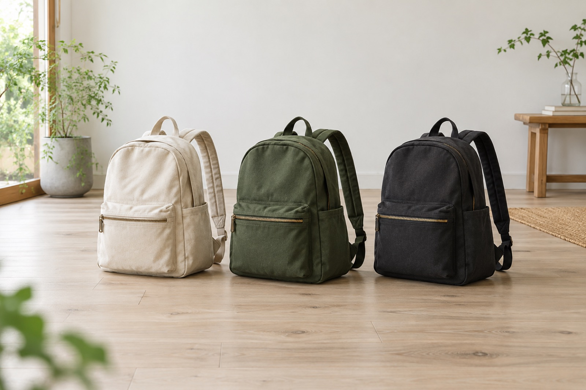
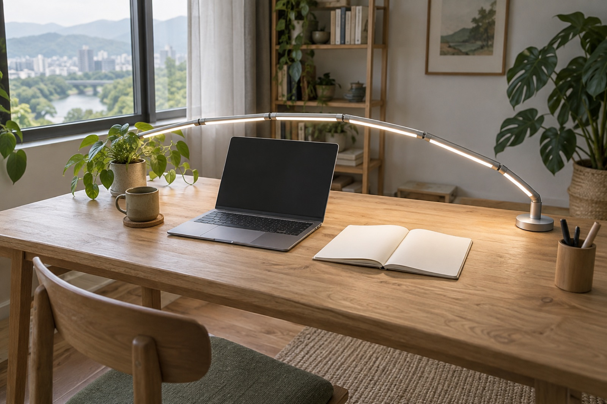
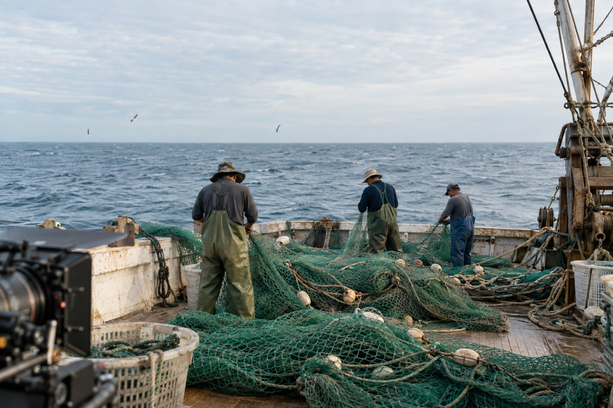
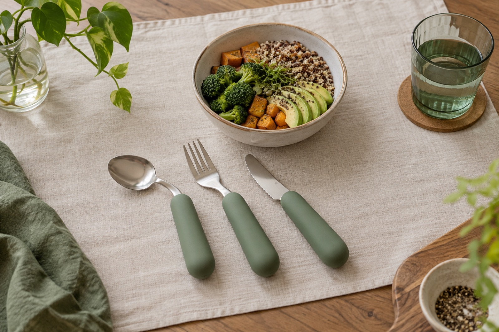
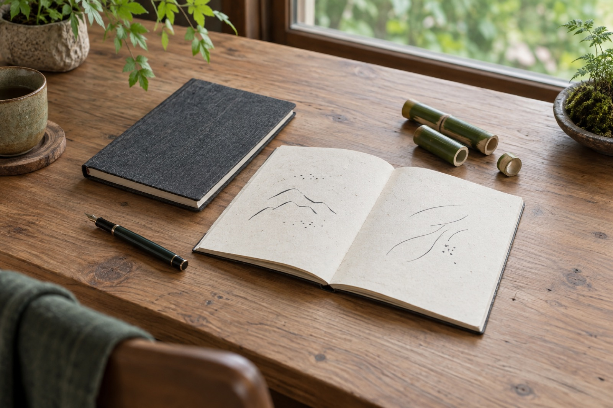
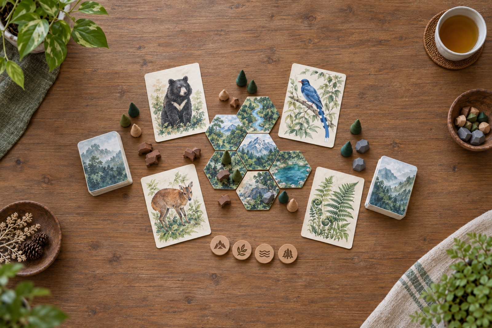
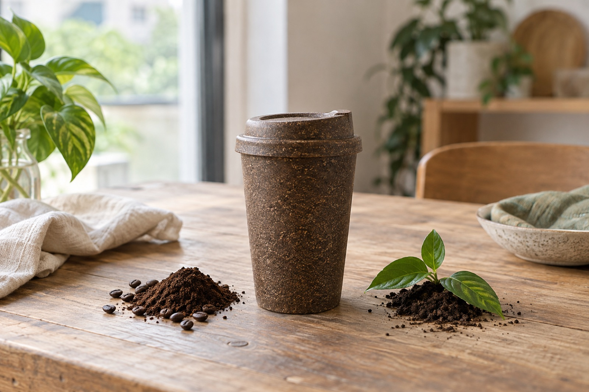
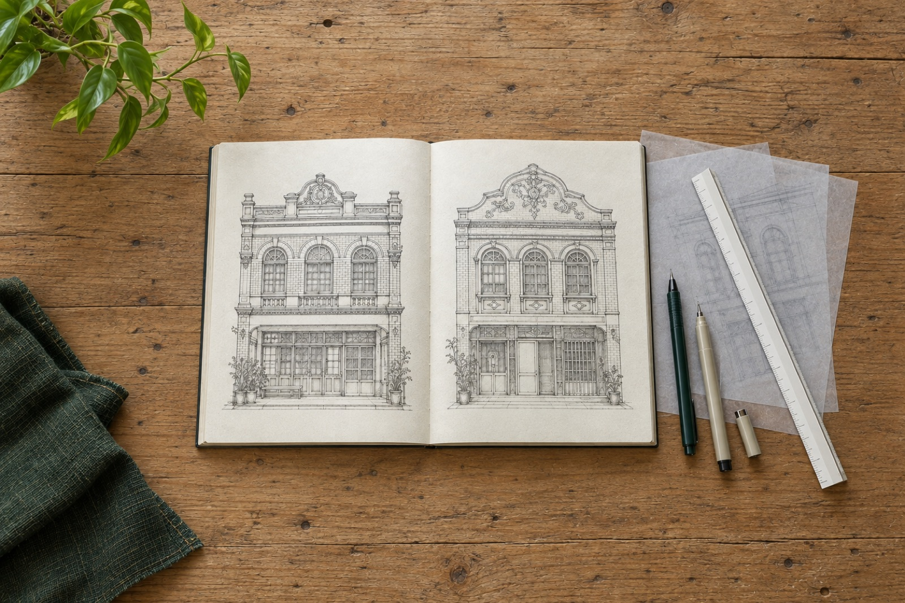

設計生活一只走十年的台南帆布包
布作工房 第三代（台南 ‧ 中西區）
用做了五十年軍用帆布的老廠布料，重新設計一只通勤包。12 號加厚胚布經三次預縮處理，肩帶內藏彈性襯墊，背兩小時不壓肩。所有車縫在台南自家工廠完成，每只包內側縫有車縫師的編號——壞了寄回來，原來那個人幫你修。
- 達成率
- 247%
- 目前金額
- NT$ 1,235,600
目前有 92 件專案正在募資，其中 14 件將在七天內結束。

設計生活布作工房 第三代（台南 ‧ 中西區）
用做了五十年軍用帆布的老廠布料，重新設計一只通勤包。12 號加厚胚布經三次預縮處理，肩帶內藏彈性襯墊，背兩小時不壓肩。所有車縫在台南自家工廠完成，每只包內側縫有車縫師的編號——壞了寄回來，原來那個人幫你修。

科技硬體 剩 5 天微光製造所（新竹 ‧ 硬體新創）
一組可以隨桌面長大的照明系統。磁吸底座 ＋ 可自由增減的燈管模組，從單支閱讀燈到環繞整張工作桌，不用重買。全系列採用 Ra97 高演色 LED 與無頻閃驅動，並開放第三方配件的規格文件。主板與組裝皆在新竹完成。

出版與影像第三視角工作室（高雄 ‧ 獨立紀錄片團隊）
四年、三艘船、兩萬海浬，跟拍六位印尼籍遠洋漁工的工作與返鄉。團隊已完成 80% 拍攝，本次募資用於後期剪輯、配樂與院線上映。回饋包含首映會門票、導演版藍光與拍攝側記攝影集。

社會設計 剩 3 天共生設計實驗室（台北 ‧ 社會設計團隊）
與職能治療師共同開發，針對中風後遺症與類風濕患者設計。加粗矽膠握柄符合無力抓握的手型，湯匙碗體角度經 42 位使用者實測調整，刀叉可單手操作。售出一組即捐贈一組至長照機構。

設計生活再生紙研所（南投 ‧ 竹業轉型計畫）
以南投廢棄竹材製成的再生紙筆記本，不漂白、無塗層，鋼筆書寫不暈不透。內頁採 180 度平攤裝訂，封面使用竹炭染色布。每售出一本，回收等量竹材送回原產地做為肥料，形成閉環。

遊戲桌遊山貓遊戲設計（台中 ‧ 獨立桌遊工作室）
2–5 人的生態系建構遊戲，收錄 86 種台灣原生動植物，每張卡牌皆由生態插畫家手繪並經生態學者審訂。玩家透過棲地配置與物種互動建立食物網，遊戲時間約 45 分鐘，10 歲以上可玩。

食品飲料循環物料實驗室（嘉義 ‧ 材料新創）
用咖啡館回收的咖啡渣加上植物基黏合劑壓製成的隨行杯，耐熱 90°C、可重複使用兩年，壽命結束後埋入土中 180 天自然分解。本次募資用於開模與首批量產，已完成 14 次材料強度測試。

出版與影像 剩 7 天測繪筆記（台北 ‧ 建築研究團隊）
耗時五年手繪測繪的 120 棟台灣街屋立面圖集，涵蓋日治洋樓、戰後現代主義與 80 年代磁磚立面。全書採 1:50 比例精繪，附加尺寸標註與建材說明，是建築、設計與文資工作者的工具書。
設計稿狀態示意
篩選條件下沒有任何專案時，列表與分頁的位置換成這個畫面；篩選側欄與「已套用」標籤維持原樣，方便放寬條件。
這個條件下目前沒有專案，試著放寬分類或贊助金額範圍。